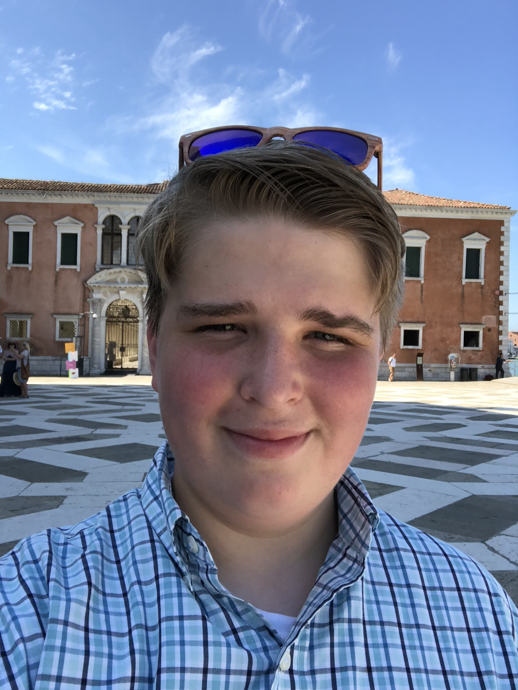

ABOUT NEWS SHOP
About Us
Who are the Bartch Trees?
- WE ARE JUST A GROUP OF FRIENDS MAKING MUSIC.
The Bartch Trees are an alternative, punk Rock Band. Our band was founded in Sanford, Florida. Our four band mates Mark, Kasey, Timmothy, and Ryan meet while they were in High School.